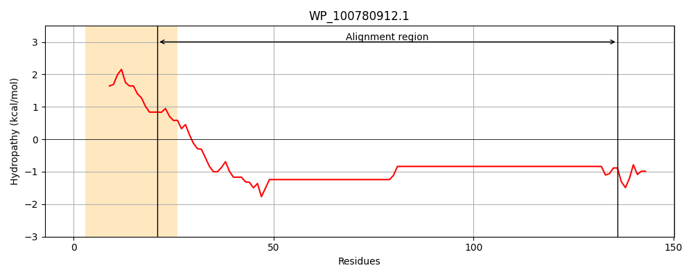
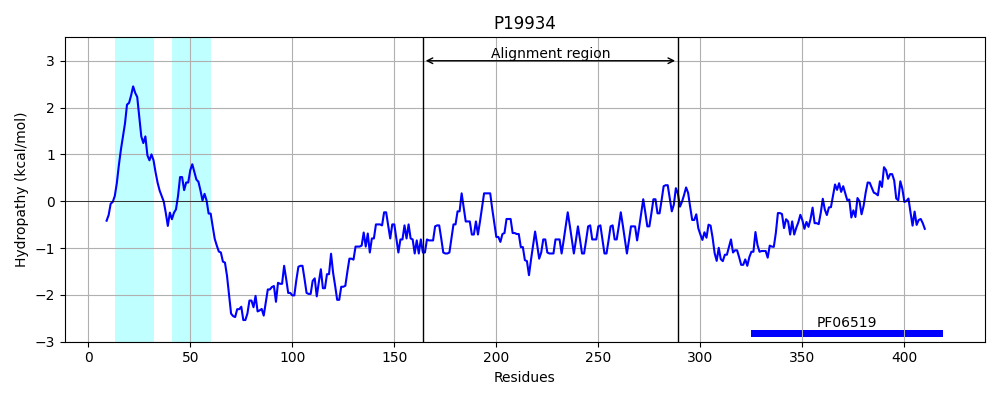
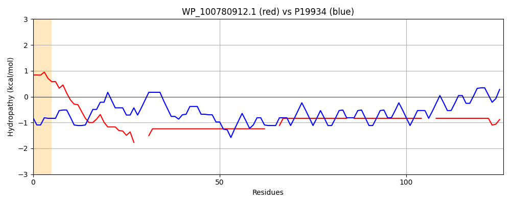

Hit Accession: P19934
Hit TCID: 2.C.1.2.1
Hit Description: gnl|BL_ORD_ID|9322 gnl|TC-DB|P19934|2.C.1.2.1 TOLA PROTEIN - Escherichia coli.
Mach Len: 126
e:0.000000
Query TMS Count : 1
Hit TMS Count: 2
TMS-Overlap Score: 0.000000
Predicted Substrates:CHEBI:8150;phospholipid
BLAST Alignment:
Score: 160 , Bit scores: 66 bits, E-value: 1.6e-13, Alignment length: 126, Percentage identity: 44
Query: 21 ASDAASATPAAAASHTTVHHKKHHKAAA---KPAAEQKAQAAKKHHKAAAKPAAEQKAQAAKK---HHKAAAKPAVAQKAQAAKK-HHKAAAKPAVAQKAQAAKK---HHKAAAKPAVAQKAQAAK 136
A+DA A AA KK AAA K A +A AA+ KAA + A + KA+A KK AA K A A+KA A KK KAAA+ A A K AA+K KAAA A A+KA AAK
Sbjct: 164 AADAKKKAEAEAAKAAAEAQKKAEAAAAALKKKAEAAEAAAAEARKKAATEAAEKAKAEAEKKAAAEKAAADKKAAAEKAAADKKAAEKAAAEKAAADKKAAAEKAAADKKAAAAKAAAEKAAAAK 289 | Protein Hydropathy Plots: |
|---|
|  |  |
Pairwise Alignment-Hydropathy Plot:
|
|---|
|  |